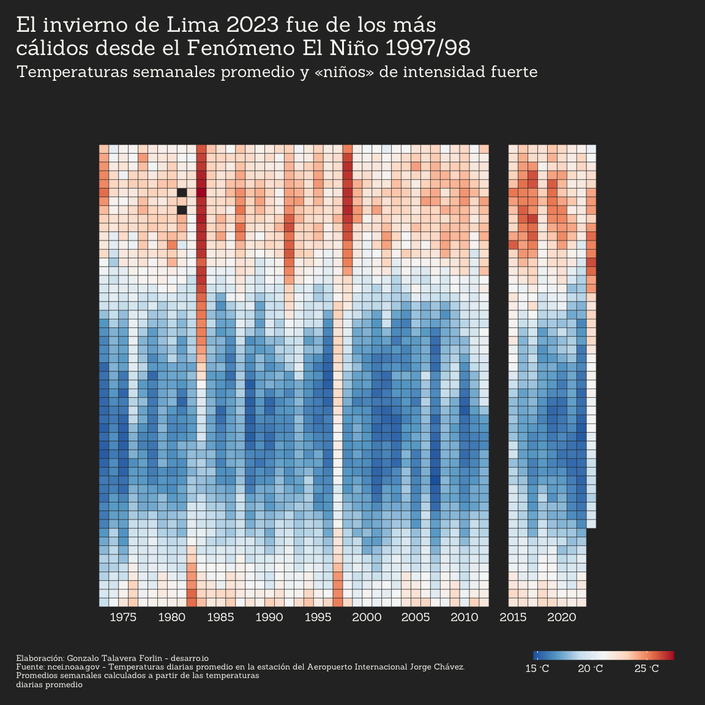
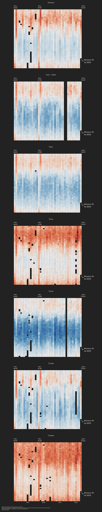
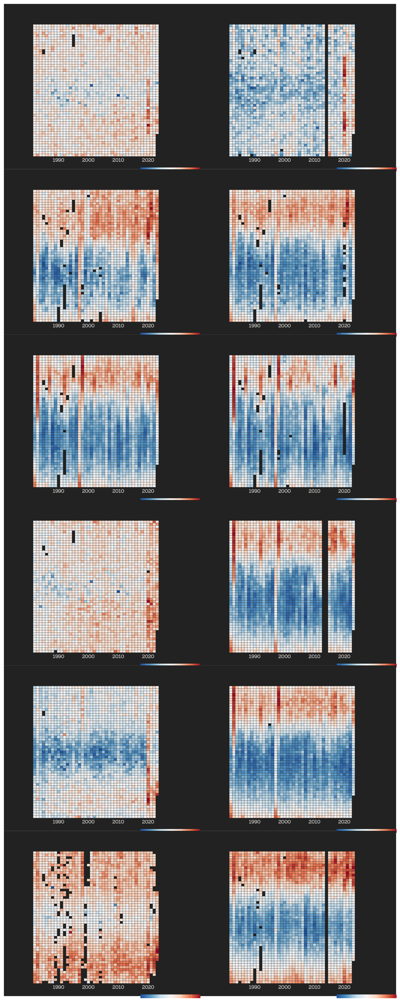
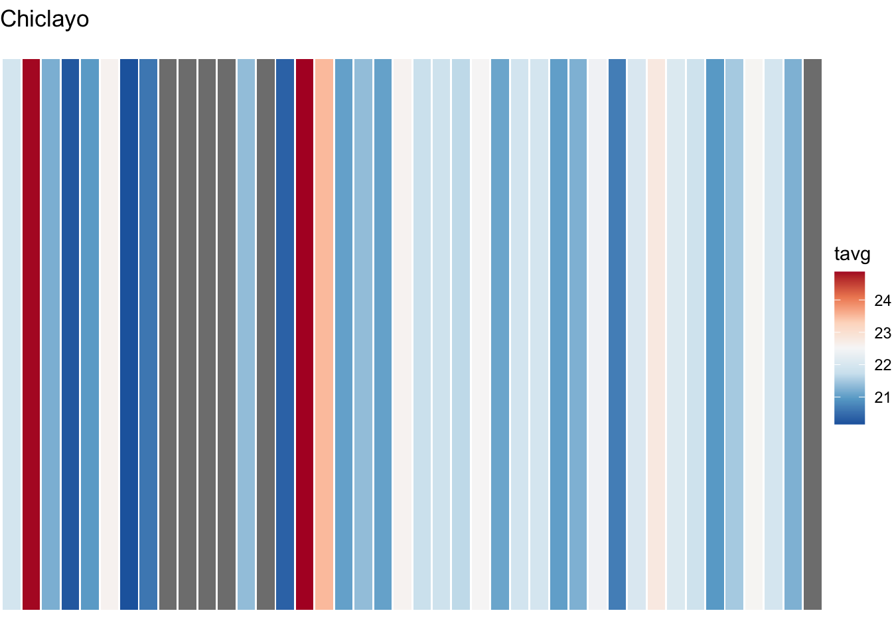
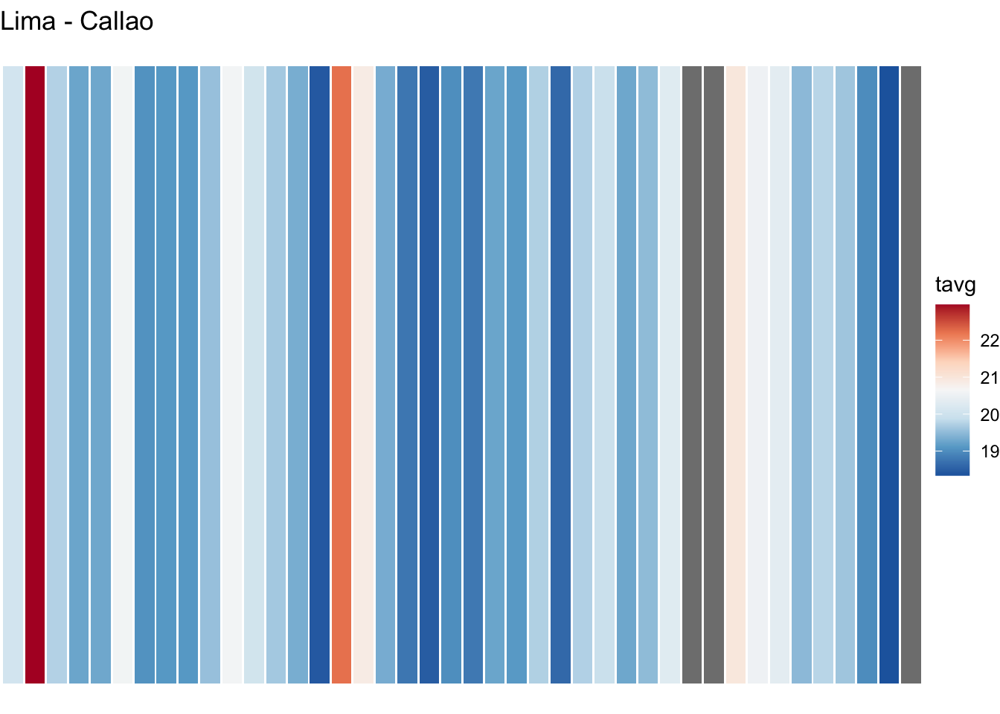
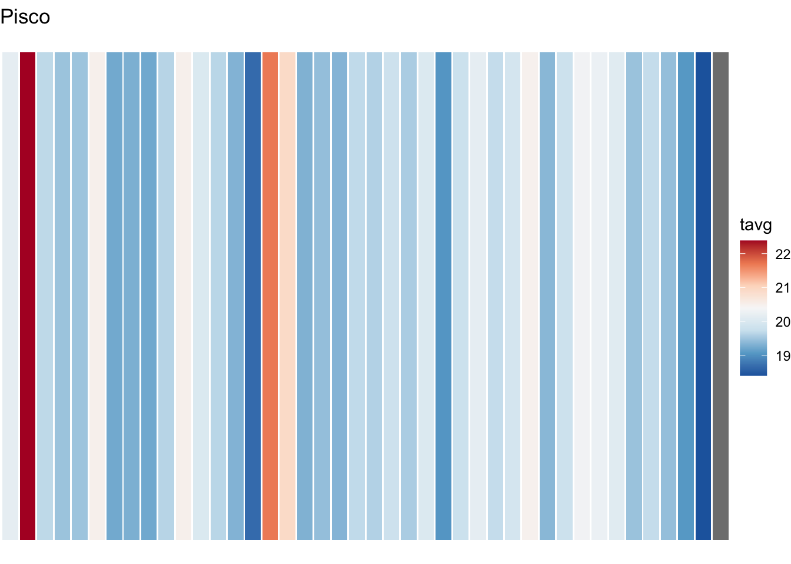
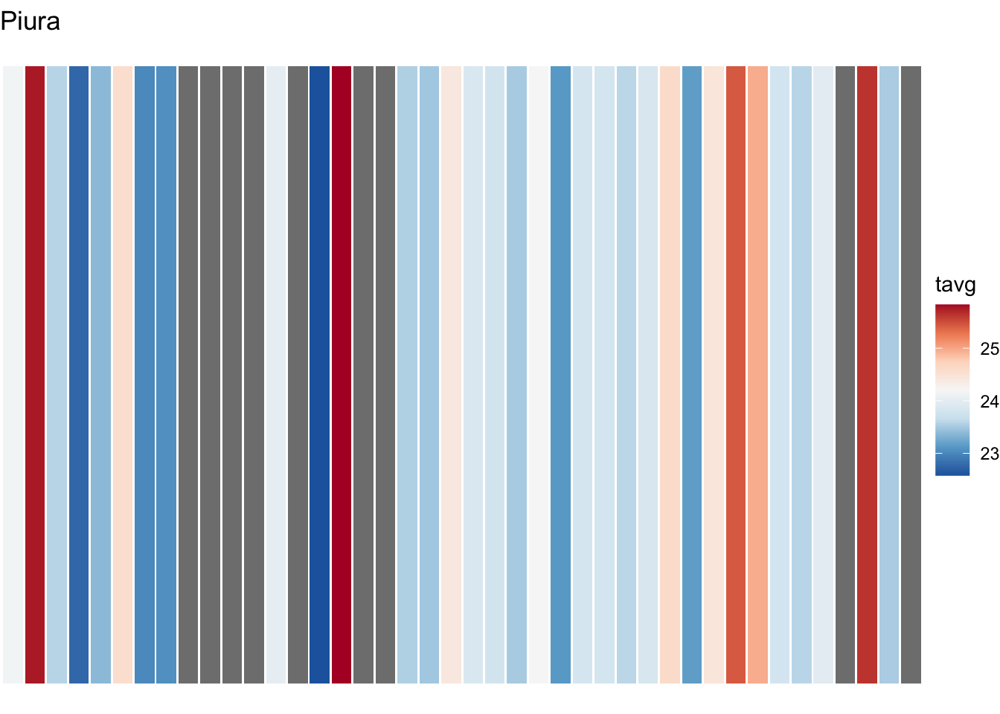
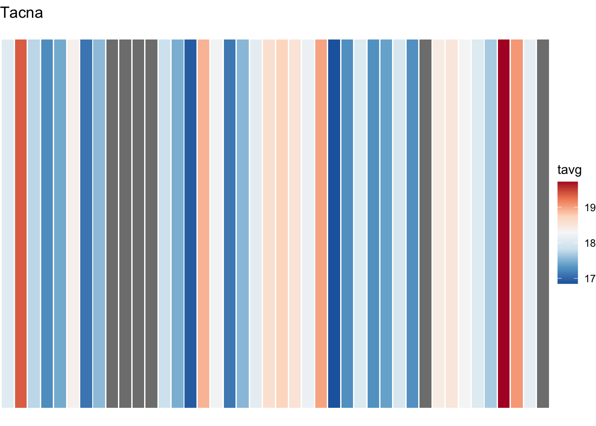
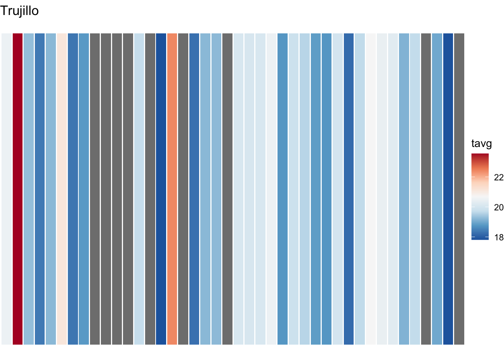
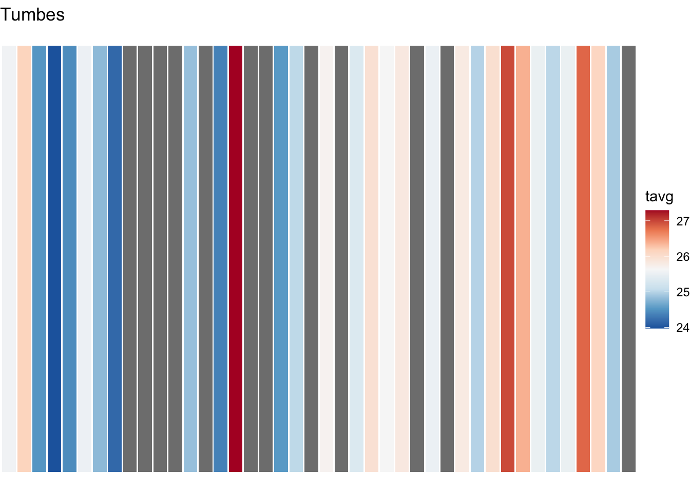

Rows: 384,667
Columns: 8
$ city <chr> "Pucallpa", "Pucallpa", "Pucallpa", "Pucallpa", "Pucallpa", "P…
$ prcp <dbl> NA, NA, NA, NA, NA, NA, NA, NA, NA, NA, NA, NA, NA, NA, NA, NA…
$ tavg <dbl> 25.0, 30.6, 31.7, 31.2, 29.4, 26.0, 28.3, 25.1, 23.7, 26.6, 27…
$ tmax <dbl> 31.1, 35.0, 37.8, 37.2, 37.2, 36.1, NA, 33.9, 27.2, NA, 32.2, …
$ tmin <dbl> 22.2, 22.2, 22.2, 22.8, 22.2, 22.8, 21.1, 22.8, 22.2, 21.1, 22…
$ station <chr> "PEM00084515", "PEM00084515", "PEM00084515", "PEM00084515", "P…
$ name <chr> "CAP FAP DAVID ABENZUR RENGIFO, PE", "CAP FAP DAVID ABENZUR RE…
$ date <date> 1963-01-03, 1963-01-05, 1963-01-06, 1963-01-07, 1963-01-08, 1…Temperaturas y lluvias
Cargar datos de NOAA
- Perú: todas las estaciones, desde 1947 en adelante
Creación de datasets
Datasets a nivel de estación
daily_data:Rows: 384,667
Columns: 10
$ city <chr> "Pucallpa", "Pucallpa", "Pucallpa", "Pucallpa", "Pucallpa", "P…
$ prcp <dbl> NA, NA, NA, NA, NA, NA, NA, NA, NA, NA, NA, NA, NA, NA, NA, NA…
$ tavg <dbl> 25.0, 30.6, 31.7, 31.2, 29.4, 26.0, 28.3, 25.1, 23.7, 26.6, 27…
$ tmax <dbl> 31.1, 35.0, 37.8, 37.2, 37.2, 36.1, NA, 33.9, 27.2, NA, 32.2, …
$ tmin <dbl> 22.2, 22.2, 22.2, 22.8, 22.2, 22.8, 21.1, 22.8, 22.2, 21.1, 22…
$ station <chr> "PEM00084515", "PEM00084515", "PEM00084515", "PEM00084515", "P…
$ name <chr> "CAP FAP DAVID ABENZUR RENGIFO, PE", "CAP FAP DAVID ABENZUR RE…
$ date <date> 1963-01-03, 1963-01-05, 1963-01-06, 1963-01-07, 1963-01-08, 1…
$ week <dbl> 1, 1, 1, 1, 2, 2, 2, 2, 2, 3, 3, 3, 3, 3, 3, 3, 4, 4, 4, 4, 4,…
$ year <dbl> 1963, 1963, 1963, 1963, 1963, 1963, 1963, 1963, 1963, 1963, 19…weekly_averages:Rows: 63,088
Columns: 9
$ station <chr> "PE000084377", "PE000084377", "PE000084377", "PE000084377", "P…
$ year <dbl> 1973, 1973, 1973, 1973, 1973, 1973, 1973, 1973, 1973, 1973, 19…
$ week <dbl> 1, 2, 3, 4, 5, 6, 7, 8, 9, 10, 11, 12, 13, 14, 15, 16, 17, 18,…
$ city <chr> "Iquitos", "Iquitos", "Iquitos", "Iquitos", "Iquitos", "Iquito…
$ prcp <dbl> 16.5500000, 7.0000000, 5.8500000, 8.1571429, 31.8285714, 11.00…
$ tavg <dbl> 26.30000, 26.27143, 26.85714, 25.81429, 26.01429, 26.62857, 28…
$ tmax <dbl> 31.00000, 28.00000, 33.00000, 29.50000, 34.00000, 32.20000, 34…
$ tmin <dbl> 23.16667, 22.40000, 23.00000, 22.66667, 22.80000, 23.42857, 24…
$ name <chr> "IQUITOS, PE", "IQUITOS, PE", "IQUITOS, PE", "IQUITOS, PE", "I…yearly_averages:Rows: 1,328
Columns: 8
$ station <chr> "PE000084377", "PE000084377", "PE000084377", "PE000084377", "P…
$ year <dbl> 1973, 1974, 1975, 1976, 1977, 1978, 1979, 1980, 1981, 1982, 19…
$ city <chr> "Iquitos", "Iquitos", "Iquitos", "Iquitos", "Iquitos", "Iquito…
$ prcp <dbl> 10.022789, 4.602620, 25.864286, 12.961765, 10.153143, 8.531755…
$ tavg <dbl> 26.38711, 26.06619, 25.80655, 25.40956, 25.39260, 25.44603, 25…
$ tmax <dbl> 32.07778, 31.55446, 31.51923, 31.44828, 31.11957, 31.73659, 32…
$ tmin <dbl> 22.37069, 21.59500, 21.79654, 21.57237, 21.90419, 21.91843, 22…
$ name <chr> "IQUITOS, PE", "IQUITOS, PE", "IQUITOS, PE", "IQUITOS, PE", "I…yearly_averages_corrected:Rows: 1,464
Columns: 6
$ station <chr> "PE000084377", "PE000084377", "PE000084377", "PE00008437…
$ year <dbl> 1946, 1947, 1948, 1963, 1964, 1965, 1966, 1967, 1968, 19…
$ city <chr> "Iquitos", "Iquitos", "Iquitos", "Iquitos", "Iquitos", "…
$ name <chr> "IQUITOS, PE", "IQUITOS, PE", "IQUITOS, PE", "IQUITOS, P…
$ missing_weeks <int> 53, 53, 53, 53, 53, 53, 53, 53, 53, 53, 1, 1, 2, 1, 1, 1…
$ tavg <dbl> NA, NA, NA, NA, NA, NA, NA, NA, NA, NA, 26.38394, 26.111…Datasets a nivel nacional - Agregar estaciones es un mal promedio
daily_data_national:Rows: 21,198
Columns: 7
$ date <date> 1946-12-22, 1946-12-23, 1946-12-24, 1946-12-25, 1946-12-26, 1946…
$ prcp <dbl> NaN, NaN, NaN, NaN, NaN, NaN, NaN, NaN, NaN, NaN, NaN, NaN, NaN, …
$ tavg <dbl> 14.2, 14.7, 14.3, 14.4, 13.8, 12.8, 14.0, 15.0, 14.8, 14.0, 15.8,…
$ tmax <dbl> NaN, NaN, NaN, NaN, NaN, NaN, NaN, NaN, NaN, NaN, NaN, NaN, NaN, …
$ tmin <dbl> NaN, NaN, NaN, NaN, NaN, NaN, NaN, NaN, NaN, NaN, NaN, NaN, NaN, …
$ week <dbl> 51, 51, 52, 52, 52, 52, 52, 52, 52, 53, 1, 1, 1, 1, 1, 1, 1, 2, 2…
$ year <dbl> 1946, 1946, 1946, 1946, 1946, 1946, 1946, 1946, 1946, 1946, 1947,…weekly_averages_national:Rows: 3,123
Columns: 6
$ year <dbl> 1946, 1946, 1946, 1947, 1947, 1947, 1947, 1947, 1947, 1947, 1947,…
$ week <dbl> 51, 52, 53, 1, 2, 3, 4, 5, 6, 7, 8, 9, 10, 11, 12, 13, 14, 15, 16…
$ prcp <dbl> NaN, NaN, NaN, NaN, NaN, NaN, NaN, NaN, NaN, NaN, NaN, NaN, NaN, …
$ tavg <dbl> 14.45000, 14.15714, 14.00000, 14.95714, 15.64286, 15.22857, 14.71…
$ tmax <dbl> NaN, NaN, NaN, NaN, NaN, NaN, NaN, NaN, NaN, NaN, NaN, NaN, NaN, …
$ tmin <dbl> NaN, NaN, NaN, NaN, NaN, NaN, NaN, NaN, NaN, NaN, NaN, NaN, NaN, …yearly_averages_national:Rows: 61
Columns: 5
$ year <dbl> 1946, 1947, 1948, 1963, 1964, 1965, 1966, 1967, 1968, 1969, 1973,…
$ prcp <dbl> NaN, NaN, NaN, NaN, NaN, NaN, NaN, NaN, NaN, NaN, 2.672863, 2.161…
$ tavg <dbl> 14.20000, 16.62082, 14.69833, 20.67914, 20.42520, 21.05088, 20.67…
$ tmax <dbl> NaN, NaN, 21.10000, 26.37164, 26.09817, 26.34497, 26.18703, 25.38…
$ tmin <dbl> NaN, NaN, 8.30000, 14.19539, 13.93560, 14.80445, 14.18182, 13.360…Temperaturas promedio
Temperatura promedio 1947-2023 - Nacional
[1] 19.51626un poco de data wrangling (quizás lo borramos)
# A tibble: 14,523 × 2
date tavg
<date> <dbl>
1 1982-01-01 21.6
2 1982-01-02 21.9
3 1982-01-03 20.3
4 1982-01-04 21.7
5 1982-01-05 22.6
6 1982-01-06 21.5
7 1982-01-07 21.4
8 1982-01-08 22.1
9 1982-01-09 20.5
10 1982-01-10 21
# … with 14,513 more rowsPromedio por semana y promedio anual
`summarise()` has grouped output by 'year'. You can override using the
`.groups` argument.# A tibble: 2,111 × 4
year week tavg_week tyear
<dbl> <dbl> <dbl> <dbl>
1 1982 1 21.6 20.1
2 1982 2 20.9 20.1
3 1982 3 21.5 20.1
4 1982 4 22.4 20.1
5 1982 5 22.0 20.1
6 1982 6 22.6 20.1
7 1982 7 22.0 20.1
8 1982 8 21.8 20.1
9 1982 9 21.0 20.1
10 1982 10 21.0 20.1
# … with 2,101 more rowsHeatmaps Lima
1. Creamos un theme
2. Creamos una función para hacer el heatmap base:
make_base_weekly_heatmap():function (weekly_dataset, medicion, custom_breaks_years = waiver(),
custom_limits = waiver(), custom_breaks_fill = waiver(),
custom_labels_fill = waiver(), color_palette = "RdBu", fill_direction = 1)
NULL3. Usamos la función para crear heatmap de Lima - Callao del 82 en adelante:

4. Creamos una lista de anotaciones
annotations_list <- list(
# Inicio de año
annotate(
"text", x = min_year-1, y = 3.5,
label = paste("Semana 1\nde", min_year),
size = 3.5, color = "#F9F7F3", family = "Sanchez", vjust = 1, hjust = 1),
geom_curve(
aes(x = min_year-1, y = 1,
xend = min_year-3, yend = 3),
curvature = 0.3, color = "#F9F7F3", linewidth = 0.2,
arrow = arrow(type = "closed", length = unit(0.05, "inches"))),
# Última semana
annotate(
"text",
x = max_year + 2,
y = max(
df_week_heat[df_week_heat$year == max_year,]$week) + 3,
label = paste(
"Semana",
max(
df_week_heat[df_week_heat$year == max_year,]$week),
"\nde",
max_year),
angle = 0, hjust = 0,
color = "#F9F7F3", size = 3.5, family = "Sanchez"),
geom_curve(
aes(x = max_year + 0.2,
y = max(
df_week_heat[df_week_heat$year == max_year,]$week) + 1,
xend = max_year + 1.5,
yend = max(
df_week_heat[df_week_heat$year == max_year,]$week) + 3),
curvature = 0.3, color = "#F9F7F3", linewidth = 0.2,
arrow = arrow(type = "closed", length = unit(0.05, "inches"))),
# FEN 83
annotate("text", x = 1982.5, y = -0.5,
label = "Niño\n82/83",
angle = 0, vjust = 0,
color = "#F9F7F3", size = 2.6, family = "Sanchez"),
# FEN 98
annotate("text", x = 1997.5, y = -0.5,
label = "Niño\n97/98",
angle = 0, vjust = 0,
color = "#F9F7F3", size = 2.6, family = "Sanchez"),
# FEN 23
annotate("text", x = 2024.5, y = -0.5,
label = "¿Niño\n23/24?",
angle = 0, vjust = 0,
color = "#F9F7F3", size = 2.6, family = "Sanchez")
)- Estilizamos:
Heatmaps de ciudades de la costa - Escala fija
Warning: Removed 7 rows containing missing values (`geom_text()`).Warning: Removed 15148 rows containing missing values (`geom_curve()`).
Heatmaps de ciudades de la costa - Escala libre
Warning: Removed 1 rows containing missing values (`geom_text()`).Warning: Removed 2171 rows containing missing values (`geom_curve()`).Warning: Removed 1 rows containing missing values (`geom_text()`).Warning: Removed 2167 rows containing missing values (`geom_curve()`).Warning: Removed 1 rows containing missing values (`geom_text()`).Warning: Removed 2187 rows containing missing values (`geom_curve()`).Warning: Removed 1 rows containing missing values (`geom_text()`).Warning: Removed 2161 rows containing missing values (`geom_curve()`).Warning: Removed 1 rows containing missing values (`geom_text()`).Warning: Removed 2111 rows containing missing values (`geom_curve()`).Warning: Removed 1 rows containing missing values (`geom_text()`).Warning: Removed 2216 rows containing missing values (`geom_curve()`).Warning: Removed 1 rows containing missing values (`geom_text()`).Warning: Removed 2135 rows containing missing values (`geom_curve()`).
Heat stripes
make_heat_stripes <- function(yearly_dataset,
medicion,
color_palette = "RdBu") {
ggplot(
data = yearly_dataset,
aes(
x = factor(year),
y = 1,
fill = {{ medicion }})
) +
labs(title = first(yearly_dataset$city)) +
geom_col() +
scale_fill_distiller(
palette = color_palette
) +
theme_void() +
theme(
plot.title = element_text()
)
}
relevant_data <- yearly_averages_corrected |> filter(
year > 1981,
city %in% c("Pisco", "Tumbes", "Piura", "Chiclayo",
"Trujillo", "Lima - Callao", "Tacna")
)
list_of_city_dfs <- split(
relevant_data,
relevant_data$city)
lapply(list_of_city_dfs, make_heat_stripes, tavg)$Chiclayo
$`Lima - Callao`
$Pisco
$Piura
$Tacna
$Trujillo
$Tumbes
smooth
Lines Plot
Desviación del promedio
#
#
# temp_avg_63_23 <- lim_63_23_noaa |>
# select(date, tavg) |>
# pull(tavg) |>
# mean()
#
# df_deviations <- lim_63_23_noaa |>
# select(date, tavg) |>
# group_by(year(date)) |>
# summarize(year = year(date), tyear = mean(tavg, na.rm = TRUE)) |>
# mutate(deviation = tyear - temp_avg_63_23)
#
# ggplot(
# df_deviations,
# aes(x = year, y = deviation, fill = "red")) +
# geom_col()